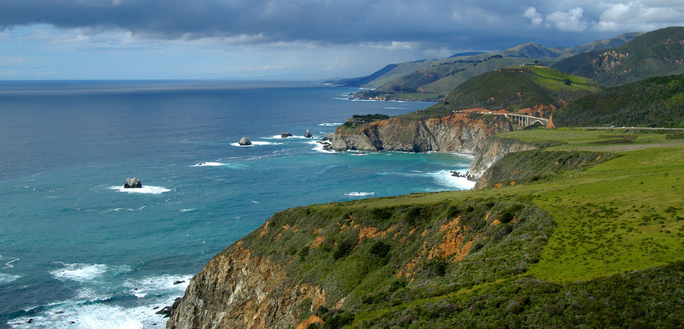
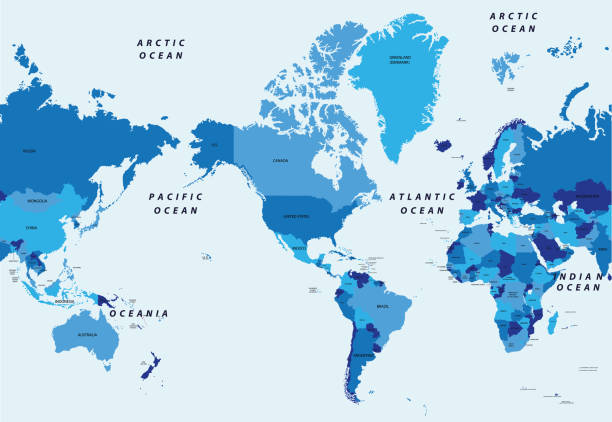
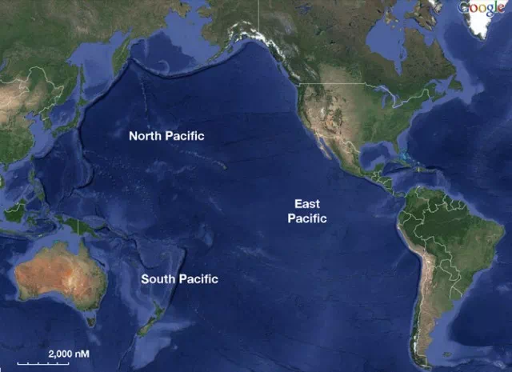
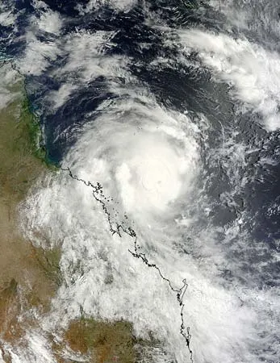
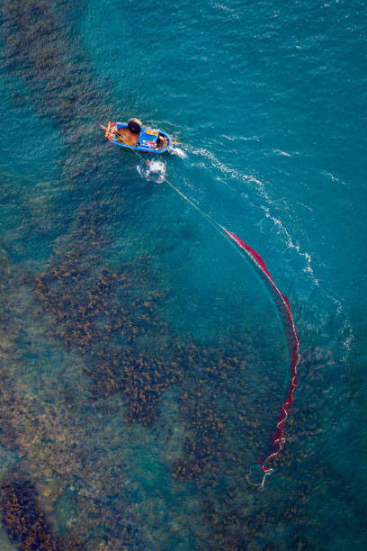

PACIFIC OCEAN
• The Pacific Ocean is the largest and deepest of Earth's five oceanic divisions.
It extends from the Arctic Ocean in the north to the Southern Ocean in the south,
and is bounded by the continents of Asia and Oceania in the west and the Americas in the east.
• At 165,250,000 square kilometers in area, this largest division of the World Ocean and the
hydrosphere covers about 46% of Earth's water surface and about 32% of the planet's total
surface area, larger than its entire land area (148,000,000 km2 (57,000,000 sq mi)).
• Ocean circulation subdivides it into two largely independent volumes of water that meet at
the equator, the North Pacific Ocean and the South Pacific Ocean. The Pacific Ocean can also
be informally divided by the International Date Line into the East Pacific and the West
Pacific, which allows it to be further divided into four quadrants, namely the Northeast
Pacific off the coasts of North America, the Southeast Pacific off South America,
Northwest Pacific off Far Eastern Asia, and the Southwest Pacific around Oceania.
• The Pacific Ocean's mean depth is 4,000 meters (13,000 feet).Challenger Deep in the Mariana
Trench, located in the northwestern Pacific, is the deepest known point in the world, reaching
a depth of 10,928 meters (35,853 feet).

• The Pacific also contains the deepest point in the Southern Hemisphere, the Horizon Deep in
the Tonga Trench, at 10,823 meters (35,509 feet).The third deepest point on Earth, the Sirena
Deep, is also located in the Mariana Trench.
• The western Pacific has many major marginal seas, including the Philippine Sea, South China
Sea, East China Sea, Sea of Japan, Sea of Okhotsk, Bering Sea, Gulf of Alaska, Mar de Grau,
Tasman Sea, and the Coral Sea.The Pacific Ocean is the largest and deepest of Earth's five
oceanic divisions.
• Across the continents of Asia, Australia and the Americas, more than 25,000 islands, large
and small, rise above the surface of the Pacific Ocean. Multiple islands were the shells of
former active volcanoes that have lain dormant for thousands of years. Close to the equator,
without vast areas of blue ocean, are a dot of atolls that have over intervals of time been
formed by seamounts as a result of tiny coral islands strung in a ring within surroundings
of a central lagoon.

LOCATION
• Of the three major oceans, the Pacific is by far the largest, occupying about one-third of
the surface of the globe. Its area, excluding the South China Sea, encompasses about 62.5
million square miles. The Pacific Ocean stretches from the Bering Strait to 60° S latitude
through more than 120° of latitude, nearly 9,000 miles. Its greatest latitudinal extent measures
some 12,000 miles along latitude 5° N, between the coasts of Colombia in South America and the
Malay Peninsula in Asia. The mean depth of the Pacific is 14,040 feet, and its greatest known depth
is 36,201 feet in the Mariana Trench—also the greatest depth found in any ocean.
• In the Northern Hemisphere the Pacific Ocean meets the Arctic Ocean in the Bering Sea. In the
Southern Hemisphere the Pacific and Atlantic mix in the relatively narrow Drake Passage between
Tierra del Fuego in South America and Graham Land in Antarctica, and the Pacific Ocean and the
Southern Ocean meet at the 60° S parallel.
• The eastern boundary of the Pacific is associated with the American cordilleran system, which
stretches from Alaska in the north to Tierra del Fuego in the south. Except for its extreme
northern and southern sections, which are characterized by fjords and their numerous off-lying
islands, and except for the deeply indented Gulf of California, the coastal boundary is relatively
regular and the continental shelf narrow. The western, or Asiatic, coastal boundary, in contrast,
is irregular. Although the mountain systems there lie roughly parallel to the coast, as they do on
the eastern Pacific coastlands, the western Pacific is noted for its many marginal seas. From north
to south they include the Bering Sea, the Sea of Okhotsk, the Sea of Japan, the Yellow Sea, the East
China Sea, and the South China Sea.

CLIMATE
• The climate patterns of the Northern and Southern Hemispheres generally mirror each
other. In the tropical western Pacific, the monsoon and the related wet season during
the summer months contrast with dry winds in the winter which blow over the ocean
from the Asian landmass. On a worldwide scale, May is the least active month, while
September is the most active month.November is the only month in which all the
tropical cyclone basins are active.
• The Pacific hosts the two most active tropical cyclone basins, which are the
northwestern Pacific and the eastern Pacific. Pacific hurricanes form south of Mexico,
sometimes striking the western Mexican coast and occasionally the southwestern United
States between June and October, while typhoons forming in the northwestern Pacific
moving into southeast and east Asia from May to December. Tropical cyclones also form
in the South Pacific basin, where they occasionally impact island nations.
• In the arctic, icing from October to May can present a hazard for shipping while persistent
fog occurs from June to December.A climatological low in the Gulf of Alaska keeps the
southern coast wet and mild during the winter months. The Westerlies and associated jet
stream within the Mid-Latitudes can be particularly strong, especially in the Southern
Hemisphere, due to the temperature difference between the tropics and Antarctica,which
records the coldest temperature readings on the planet. In the Southern hemisphere, because
of the stormy and cloudy conditions associated with extratropical cyclones riding the jet
stream, it is usual to refer to the Westerlies as the Roaring Forties, Furious Fifties and
Shrieking Sixties according to the varying degrees of latitude.

ECONOMY
The exploitation of the Pacific's mineral wealth is hampered by the ocean's great depths.
In shallow waters of the continental shelves off the coasts of Australia and New Zealand,
petroleum and natural gas are extracted, and pearls are harvested along the coasts of
Australia, Japan, Papua New Guinea, Nicaragua, Panama, and the Philippines, although in
sharply declining volume in some cases.
• FISHING
Fish are an important economic asset in the Pacific. The shallower shoreline waters of the
continents and the more temperate islands yield herring, salmon, sardines, snapper, swordfish,
and tuna, as well as shellfish.[90] Overfishing has become a serious problem in some areas.
Overfishing leads to depleted fish populations and closed fisheries, causing both economic and
ecologic consequences.[91] For example, catches in the rich fishing grounds of the Okhotsk Sea
off the Russian coast have been reduced by at least half since the 1990s as a result of overfishing.

ENVIRONMENT
• The Northwestern Pacific Ocean is most susceptible to micro plastic pollution.
The quantity of small plastic fragments floating in the north-east Pacific Ocean
increased a hundredfold between 1972 and 2012.
• Marine pollution is a generic term for the harmful entry into the ocean of chemicals
or particles. The main culprits are those using the rivers for disposing of their
waste. The rivers then empty into the ocean, often also bringing chemicals used as
fertilizers in agriculture. The excess of oxygen- depleting chemicals in the water
leads to hypoxia and the creation of a dead zone.
• Marine debris, also known as marine litter, is human-created waste that has ended up
floating in a lake, sea, ocean, or waterway. Oceanic debris tends to accumulate at the
center of gyres and coastlines, frequently washing aground where it is known as beach
litter.